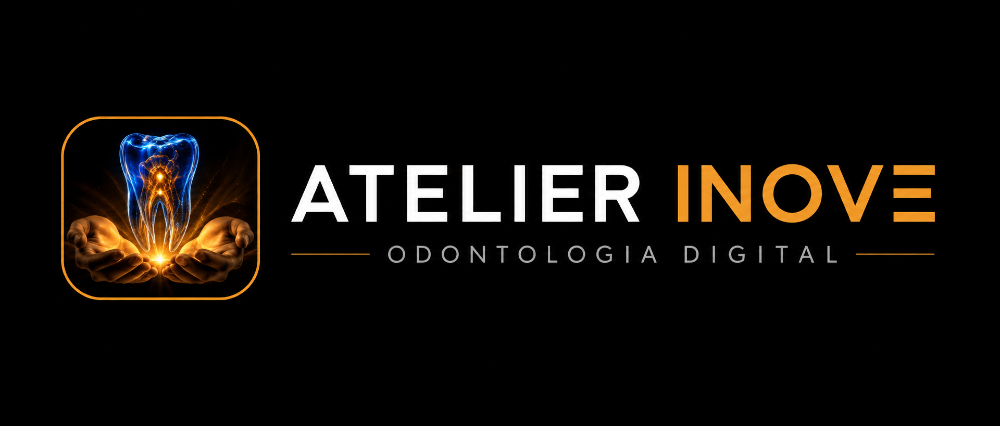

Coroas e pontes
Peças em cerâmica, zircônia ou metalocerâmica com anatomia e cor planejadas.


Plataforma exclusiva para dentistas
Trabalhos protéticos digitais com qualidade, agilidade e acabamento premium para valorizar cada planejamento clínico.
Atelier Inove
O Atelier Inove foi pensado para dentistas que buscam um laboratório parceiro, com comunicação objetiva, atenção aos detalhes e domínio do fluxo protético digital.
Da leitura do caso à entrega final, cada etapa é conduzida para unir estética, função, prazo e confiança no resultado.
Soluções
Serviços protéticos para reabilitações estéticas, funcionais e implantossuportadas, sempre alinhados à necessidade clínica do paciente.
Peças em cerâmica, zircônia ou metalocerâmica com anatomia e cor planejadas.
Estruturas sobre implantes com atenção à passividade, encaixe e resistência.
Planejamento estético para forma, proporção, textura e naturalidade do sorriso.
Fluxo com arquivos digitais, referências fotográficas e comunicação por caso.
Peças temporárias para proteção, teste estético e condução do tratamento.
Acompanhamento técnico para ajustes, provas e refinamento antes da instalação.
Fluxo Inove
O caso chega organizado, passa por conferência técnica e segue por etapas claras até a entrega, com comunicação para evitar retrabalho.
Contato
Chame no WhatsApp, envie arquivos e receba orientação sobre prazo, material e melhor caminho para a execução protética.